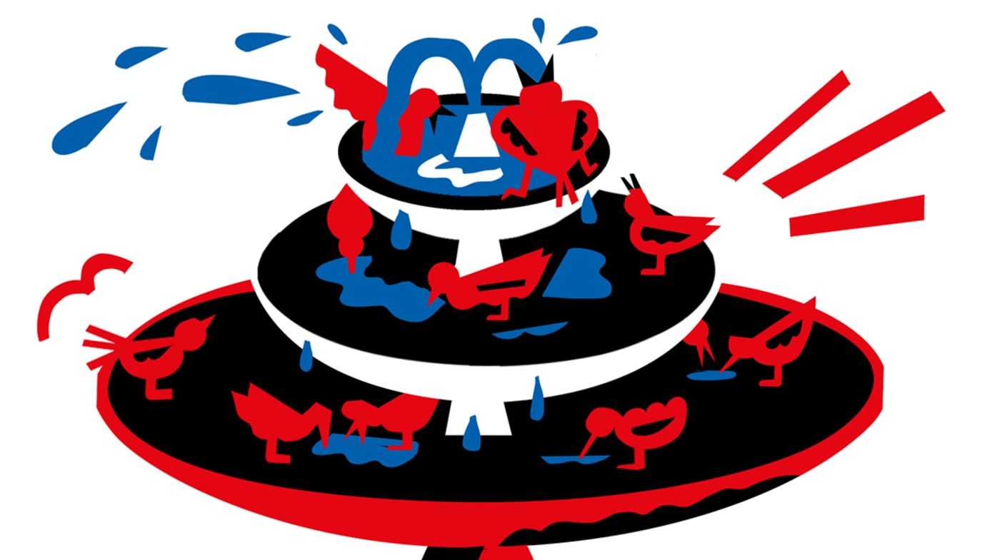

How to Fix American Capitalism
For the past few decades there’s been a rough consensus about how to run a modern capitalist economy. Trade should be free. The gold standard is archaic.
Antitrust should protect consumers rather than punish bigness. Tax rates should be (modestly) higher for the rich. Government should run big deficits during recessions to support growth but get frugal during good times to reduce debt. Republicans and Democrats didn’t agree on everything, but the economists in their respective brain trusts shared a general understanding of how to build prosperity.
That centrist consensus is losing its power. Republicans are being drawn toward the protectionism of President Trump,
Democrats toward the socialism of Representative Alexandria Ocasio-Cortez, the freshman congresswoman from New York City.
Trust in the establishment is low, leaving people open to alternatives whether they come from the Left or the Right,
says Patrick Egan, a New York University political scientist. People are open to change and new ideas in a pretty
substantial way.
This dissatisfaction with the status quo seems surprising on one level. Unemployment is low. If this U.S. economic expansion lasts past its 10th anniversary in June, it will be the longest since records began in 1854. But much of the prosperity has accrued to those at the top. Meanwhile, China is overtaking the U.S., and climate change threatens the planet.
That makes this a good time to look at some of the ideas for fixing American capitalism that will be debated in the
2020 presidential campaign. Here, we identify potential remedies, name their advocates, and explain the schools of thought
from which they emerge. We don’t pick favorites—that’s for you to do.
—Peter Coy
Antitrust Pivo

Many of the U.S.’s biggest economic ills—rising inequality, stagnant wages, low productivity growth—stem in large measure from corporate consolidation and monopoly power run amok.
That’s the message from a new breed of policy wonk urging a return to the trustbusting days of the early 20th century
The movement—labeled the New Brandeis School by its proponents and derided as Hipster Antitrust by its critics—is looking to ditch the Chicago School approach that’s dominated antitrust enforcement since the late 1970s. The Chicago School hews to what’s known as the consumer-welfare standard, which finds mergers anticompetitive only if they raise prices.
The new model takes its inspiration from Supreme Court Justice Louis Brandeis, who emphasized the need to restrain big companies and the concentration of economic power. Lina Khan helped galvanize the movement with a 2017 paper she wrote as a law student at Yale that made the case that Amazon.com Inc. is a threat to competition, even though it's lowered some prices for consumers.
The ideas in Khan’s paper aligned with those of economists and lawyers, such as Tim Wu, a Columbia Law School professor, who’ve been arguing that the current antitrust framework is ill-equipped to deal with today’s technology titans. Among their recommendations is preventing tech platforms from vertically integrating into different lines of business, where they can potentially favor their own services and harm rivals. In this view, Facebook shouldn’t be allowed to own Instagram.
Defenders of the current framework say the New Brandeis School is nothing more than a big-is-bad ethos that would punish companies for being successful and popular with consumers. Yet it’s hard to ignore the growing body of research documenting the relationship between rising corporate consolidation and worrying economic trends, including a drop in the number of startups and tepid wage growth.
One sign of the movement’s increasing influence is that Joseph Simons, chairman of the Federal Trade Commission, one of the
country’s two antitrust watchdogs, has organized hearings on the new enforcement approach. Also, Democratic presidential
candidates such as Senator Elizabeth Warren are making antitrust enforcement a central part of their campaigns.
—David McLaughlin
Supply-Side Economics
The broad contours of the Republican plan to optimize capitalism don’t look much different today than they did in the 1980s.
The supply-side pitch is that reducing taxes on companies and top-earning individuals, curtailing spending on welfare programs, and slashing regulation spurs business investment. This leads to faster economic growth that benefits all Americans. Even the cast of characters is familiar. President Trump’s top economic adviser, Larry Kudlow, promoted a similar agenda as an official in the Reagan White House.
The first piece of the formula is already in place: A Republican-controlled Congress approved tax cuts at the end of Trump’s first year in office. (The jury is still out on whether those have permanently lifted the U.S. economy onto a higher growth track, as proponents argued.) The other piece—reducing future obligations of major entitlement programs—will be difficult to pull off now that Democrats control the House of Representatives and the political winds blow in the direction of a more relaxed attitude toward government budget deficits.
Still, it’s seen as a key ingredient. In a 2017 white paper, John Cogan, Glenn Hubbard, John Taylor, and Kevin Warsh—all pillars
of Republican establishment economic policy circles—argued that without significant spending restraint, even with positive
effects on economic growth, the tax rate reductions would likely be limited and temporary, limiting their economic benefits.
The contention is that spending on welfare eventually will account for an ever-growing share of the economy, “crowding out”
private-sector investment and weighing on growth. This view is still widely held among Washington policymakers. At a Jan.
30 press conference, Federal Reserve Chairman Jerome Powell said, It is a long-known fact that the U.S. federal government
budget is on an unsustainable path,
citing rising health-care costs and an aging population.
Conservative economists will likely have a difficult time rallying voters to their cause in 2020 because of the public perception
that the orthodox prescription is partly to blame for widening inequality. It’s a fact that wealth disparities in the U.S. have
been rising ever since the early 1980s—the last time Republicans presided over a sea change in the economic agenda.
—Matthew Boesler
German Model

The search for better ways to distribute the fruits of American capitalism has some looking to Europe for inspiration.
Germany offers a model of how corporate governance could be revamped to give American workers a bigger say over what happens to company profits. A law that took effect in 1976 formalized what had been common practice at many German companies as far back as the 1920s. It dictates that in a corporation with more than 500 employees, a third of supervisory board seats must be filled by directors elected by workers, a share that rises to one-half for companies with more than 2,000 employees.
The German system, known as co-determination, allows employees to have a say in working conditions, such as contractual terms and pay. It also gives them a voice in how profits are deployed—say, for a new research and development center vs. more dividends for shareholders. Some researchers say co-determination has helped spur productivity and innovation at German companies.
At the root of co-determination is the idea that companies should balance the interests of their various stakeholders, a group that includes equity owners but also workers, customers, and even local communities. That was also the ideal in the U.S. until the early 1980s, when under the influence of economist Milton Friedman it was supplanted by the belief that corporate managers’ sole responsibility is to maximize returns for shareholders. That single-minded devotion to stockholders has been cited as a factor in the stagnation of U.S. wages.
In August, Democratic presidential hopeful Elizabeth Warren unveiled her Accountable Capitalism Act, which draws from the German experience.
The plan would allocate a minimum of 40 percent of a company’s board seats to directors representing workers. The requirement would apply to
U.S.-domiciled corporations with more than $1 billion in annual revenue. Warren’s proposal is designed as a corrective to a trend that has
been drawing increased scrutiny of late: Publicly traded companies in the U.S. have been devoting more and more of their profits to share
buybacks and dividends. Given that less than half of U.S. households own stocks, the chances that workers will benefit when their employer
succeeds improve markedly when profits are plowed back into the company.
—Carolynn Look
Modern Monetary Theory
Any ambitious government-led project to reshape the U.S. economy usually runs into the same objection: We can’t afford it. One school of economic thought says that’s all wrong.
Modern Monetary Theory, a once-fringe set of ideas now getting some mainstream attention, says governments borrowing in their own currency have more room to spend than they think. The U.S., for example, can run deficits without having to worry about going bust, because it creates the dollars in the first place. The real constraint only kicks in when there’s too much spending relative to a limited supply of goods and services—in other words, when inflation spikes. And there’s been little sign of that in America for decades.
MMTers argue that their system isn’t so radical; it’s the way things already work, at least some of the time. Presidents, including the current one, haven’t balked at measures to boost the military or cut taxes, even when the resulting deficits run into the hundreds of billions. And emergencies, such as the 2008 financial meltdown, typically push concerns about balanced budgets deep into the background. Now there’s a different sort of emergency on the horizon: climate change. Since the threat is arguably greater than economic depression or even war, it requires action on a suitably vast scale, argue Democrats who’ve picked up on the issue.
And MMT offers a key to unlock the financing. That’s why freshman Representative Alexandria Ocasio-Cortez, one of the first U.S. politicians to talk publicly about MMT, is also at the forefront of the drive for a Green New Deal. The maximal version of that program includes shifting the U.S. to 100 percent renewable energy within 10 years. If that wasn’t ambitious enough, the plan also calls for the government to guarantee a job for everyone who wants one—an MMT favorite that’s also a throwback to Franklin D. Roosevelt’s New Deal.
Clearly, the environment matters more than entries on balance sheets,
says Randall Wray, a senior scholar at the Levy Economics Institute of
Bard College and one of MMT’s most prominent proponents. The environmental thing is real. It’s not financial.
MMT’s detractors say government spending on that scale could trigger the kind of inflation that would wreck the whole economy. America’s national debt has already ballooned since the Great Recession, they warn, and adding more will erode the country’s creditworthiness and undermine the dollar’s role in global finance.
While those warnings are still frequently heard, there are signs that they’re losing their impact as the debate leans left. Several renowned economists who aren’t MMTers have recently tried to downplay the risks attached to deficits and debt. They include Olivier Blanchard, former chief economist at the International Monetary Fund, and Obama administration heavyweights Larry Summers and Jason Furman. Bank of England chief Mark Carney has made the case that action on climate change represents an economic opportunity, not a burden.
Ocasio-Cortez didn’t manage to garner enough Democratic support for her first attempt at actual legislation, a proposal to set up a Green New Deal
committee. But there’s broad sympathy for the idea in principle, including among several of the party’s presidential candidates, and many of them
have also endorsed a jobs guarantee.
—Katia Dmitrieva
Tech to the rescue

Amazon.com Inc. Chairman and Chief Executive Officer Jeff Bezos wishes there were a trillion human beings in the solar system.
With room for that
many people, there would be a thousand Einsteins and a thousand Mozarts,
he told the Economic Club of Washington, D.C., in September. The world’s
richest man is funneling $1 billion or more a year into a company, Blue Origin, that he hopes will help make extraterrestrial settlement a reality,
creating places to live for all those Einsteins and Mozarts.
Bezos and others argue that innovation is the essential ingredient in human betterment. They have a point. Life would be pretty awful without the
advances made by past generations, such as indoor plumbing, vaccines, refrigeration, and telephones. Bezos even asserts that freedom itself, not
just material well-being, depends on technological progress: I don’t even think stasis is compatible with liberty,
he told the Washington audience.
In the view of the tech-to-the-rescue crowd, innovation can solve just about every problem humanity faces. Global warming can be fixed with better
electric cars, solar cells, wind turbines, and batteries. Income inequality can be solved by educating or retraining workers for the high-tech jobs
of the future.
The Information Technology & Innovation Foundation, a Washington think tank founded in 2006 to propagate this philosophy, argues that using antitrust law to break up or discipline the big technology companies can backfire, discouraging innovation and harming consumers. Robert Atkinson, president and founder of the ITIF, co-wrote a 2018 book with Michael Lind called Big Is Beautiful: Debunking the Myth of Small Business.
The techies welcome a prominent role for government in paying for education and conducting or supporting research and development. But the movement is split on trade. The nationalists want to keep the U.S. in the tech vanguard and are willing to resort to tariffs and subsidies to preserve its dominance. The globalists, including some heads of multinational companies that earn lots of their profits abroad, are happy to see other countries advance technologically, figuring that the benefits of breakthroughs—say, a cure for cancer—will be shared by all of humanity regardless of their origin.
The common theme is that prosperity depends on a robust tech sector. We’re in a 10-year productivity depression
that’s hurting living standards, says
Atkinson.
Tech is really the only way we’re going to raise productivity growth.
—Peter Coy
Tariff Truthers
If there’s one thing most economists around the world today can agree on, it’s that tariffs are bad.
Protect one domestic industry with an import tax, and you hurt a swath of others. Tariffs reduce choices for consumers and push up prices for goods. They stifle competition and deter innovation. And they invite other countries to retaliate, leading to the sort of tit-for-tat behavior that’s left U.S. soybean farmers watching crops once destined for China rot in their fields.
The president, of course, disagrees. I am a Tariff Man,
he proclaimed in a Dec. 4 tweet. Besides Trump, the maligned tariff has a small core of defenders
on the fringes of mainstream economics who claim an intellectual history going back to Alexander Hamilton and his “Report on Manufactures” to justify the
value of duties. Tariffs, argues Jeff Ferry, chief economist at the Coalition for a Prosperous America (CPA), preserve jobs and help unleash investment.
The Washington-based CPA has close ties to the administration. Its chairman, Dan DiMicco, is a former Nucor Corp. chief executive and was a vocal advocate for the steel tariffs Trump introduced in 2018. He also led the transition team that picked Robert Lighthizer for the job of trade czar. he Trump tariffs have so far hit more than $300 billion in U.S. imports from around the world. And there may be more to come, with the U.S. Department of Commerce now finalizing an investigation into possible auto duties.
The Trump administration and groups such as the CPA that favor greater protectionism say the levies have helped trigger a manufacturing boom that led to the
addition of 284,000 jobs in 2018, according to official statistics. If you look at the evidence, tariffs are contributing to the growth of our economy,
wrote Ferry in a column published on the CPA’s website in December.
Many dispute those numbers. They also argue the tariffs will lead to longer-term economic harm by reducing the attraction of the U.S. as a location for
export-oriented plants. Volvo Cars, for example, has scrapped plans to expand a South Carolina plant to ship cars to China. General Motors Co., meanwhile,
has said the fallout from duties on foreign steel and aluminum have cost it at least $1 billion. But Ferry dismisses any such complaints. Tariffs are a
step in the right direction,
he says. “The evidence is all around us.”
—Shawn Donnan
Libertarianism

Devotees of small government were stirred by candidate Trump’s vow to “drain the swamp” and pull U.S. troops out of foreign quagmires.
But President Trump,
with his tariffs and deficits, has proved to be the opposite of a libertarian,
the Libertarian Party declared in March.
Still, the free-market purists aren’t giving up the fight. One of their bugbears is the Federal Reserve and its cheap money—a distortion of the market’s
natural efficiency, according to Austrian economist and libertarian idol Friedrich Hayek. When Ron Paul, America’s highest-profile libertarian, ran for
president in 2012, he pushed for the Fed’s abolition and a return to the gold standard. If you want to restrain government, you restrain the power to create
money,
he said. “That’s what gold does.”
The Fed can probably rest easy. Americans aren’t exactly clamoring for a return to gold, while hyperinflation and other disasters predicted by libertarians in the easy-money decade since 2008 haven’t come to pass.
Some libertarian ideas are finding a larger audience. Among them are the call for stripping back zoning rules, because they limit the construction of affordable housing, and their criticism of patents that lock in profits for Big Tech or Pharma and licensing requirements that insulate professionals like doctors from competition. A common theme of such critiques—that the economy is rigged in favor of big and established actors—commands growing support among mainstream economists.
And beyond the realms of U.S. policy, the world is evolving in ways that give libertarians hope. Those who deplore the “tyranny” of central banks are rejoicing at the explosion of cryptocurrencies. (The Libertarian Party accepts donations in Bitcoin.) Recreational marijuana use is already legal in 10 states and backed by more than 6 in 10 Americans, according to a poll by the Pew Research Center.
Paul, who outperformed most expectations during his own tilt at the presidency, says a popular Libertarian candidate could well emerge in 2020. It’s a stretch to
say he’s cheerful about the wider outlook, though. It’s a bubble economy in many, many different ways, and it’s going to come unglued,
he told the Washington Examiner.
—Andrew Mayeda